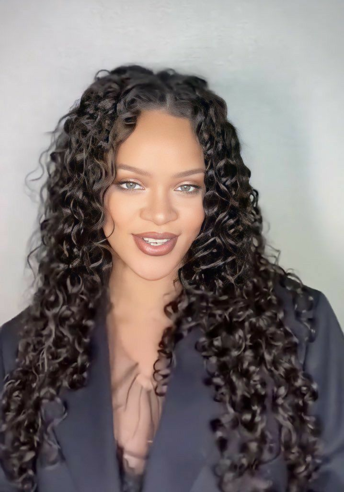

Quem sou eu
Eu sou Mariana Bispo, sou cabeleireira há mais de 18 anos, comecei a fazer tranças em 2019, hoje sou especialista em tinturas, hidratações, design de sombrancelha, tranças de diversos tipos, cortes para cabelos femininos, depilação, entre outros serviços estéticos.
Atualmente estou trabalhando em um espaço em minha casa e tenho os matérias necessários para o atendimento, busco cumprir um bom trabalho e atmosfera agradável para os clientes trazendo autoestima, confiança e bom humor.
